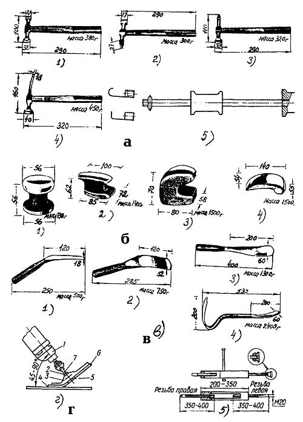
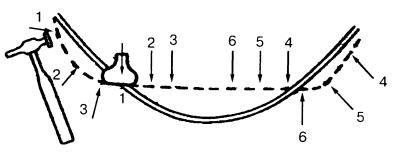
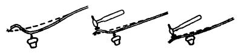
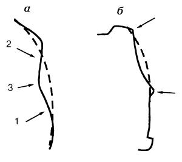
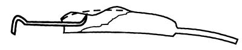
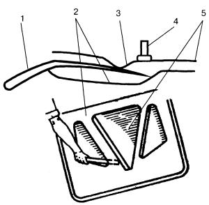
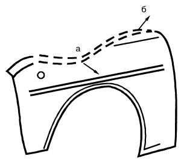
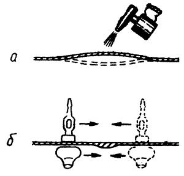
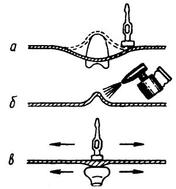

Выколотка и рихтовка
Выколотка – это операция по восстановлению формы поврежденных поверхностей кузова. Выколотку производят либо выдавливанием-вытяжкой, либо нанесением ударов.
Рихтовка – это операция, завершающая отделочную обработку листовых деталей.
Цель рихтовки – устранением неровностей добиться такого состояния поверхностей, при котором они становятся неотличимыми от штампованных.
Подготовительные работыСначала следует определить возможный объем работ и дать оценку разрушениям кузова автомобиля: разрушения велики и восстановить кузов собственными силами невозможно; имеющиеся повреждения и по форме, и по размерам поддаются восстановлению правкой, т. е. комбинацией приемов выколотки и рихтовки.
Только рихтовкой можно устранить мелкие повреждения, вмятины, выпуклости, изгибы.
Особое внимание следует обратить на обработку поверхности восстановленных деталей. Не жалейте на эти работы времени, так как от качества обработанных поверхностей зависит стойкость лакокрасочного покрытия.
Если требуется заменить крупную деталь, например, крыло или панель задка, то предварительно нужно выполнить следующие операции:
• удалить ножницами, зубилом или ножовкой деформированный металл с поврежденного места;
• зачистить напильником, наждачным кругом или шкуркой до металлического блеска кромки металла по краям вырезки;
• наложить заплату или подогнать по месту полностью заменяемую деталь;
• приварить металлические заплаты (рекомендуется газовая сварка). Сварной шов выполните сначала прерывистым, а затем сплошным;
• зачистить сварной шов напильником заподлицо с лицевой поверхностью.
Если повреждения вызваны коррозионными разрушениями, исправьте их, используя синтетические материалы с выравниванием поверхности наполнителями.
Применяемый инструментДля выполнения жестяницких работ по восстановлению поврежденных деталей и панелей кузова применяется множество различных инструментов и приспособлений. Условно все это многообразие предметов труда можно объединить в две группы: основной и вспомогательный инструмент.
К ОСНОВНОМУ ИНСТРУМЕНТУ относятся молотки, поддержки, растяжки, крючки, напильники, шлифовальное устройство и др.
Молотки применяются для придания поверхности соответствующего профиля. В зависимости от назначения существуют различные виды молотков.
Молоток для правки – это основной инструмент выколотки и рихтовки. Он может иметь разную форму. Желательно, чтобы одна его сторона было круглой и гладкой, а другая – с плоской квадратной головкой. Молоток должен быть хорошо насажен, иметь гладкую, без трещин и заусенцев ручку. Шейка ручки не должна быть толстой, так как молоток при ударе должен пружинить.
Чеканочный молоток с одной стороны имеет форму притупленного конуса. Используется при завершении правки. Без вытягивания металла им можно отрихтовать панель кузова.
Молоток для загибки фланцев с двумя оперениями, повернутыми на 90°.
Молотки мягкие деревянные (киянки), резиновые или пластмассовые, служат для грубой правки панелей.
Инерционный молоток применяется для вытягивания труднодоступных вмятин посредством ударов бойка об ограничитель-отбойник. Имеет комплект насадок, облегчающий захват поднимаемого металла.
Поддержки различной формы. Применяются в качестве подкладок для формирования листового металла при ударах «с изнанки» для угловых закруглений, в качестве наковальни при чеканке.
Растяжки применяют в качестве рычагов для выдавливания, вытягивания и выталкивания поврежденных частей поверхности. Они заменяют поддержки в труднодоступных местах.
Растяжки винтовые гидравлические (домкрат) используются для создания необходимого усилия при вытяжке металла.
Крючки из «сталистого» (упругого) прутка диаметром 8–12 мм различной длины с петлей на ручке. Клювик крючков предварительно проковывают и заостряют. Этот инструмент используется для выталкивания небольших вмятин, для правки труднодоступных мест. Крючки вводят в закрытые полости через имеющиеся или просверливаемые отверстия.
Напильники рихтовочные с крупной дугообразной, диагональной или перекрестной насечкой.
Шлифовальное устройство – электродрель с приспособлением в виде хвостовика для патрона, резинового диска и приложенной к нему наждачной бумаги, прижатой гайкой через шайбу. Для наглядности покажем на рис. 15 набор инструментов и приспособлений, применяемых при правке и рихтовке панелей кузова.

Рис. 15. Набор инструментов для рихтовочных работ:
а – молотки: 1-е плоской, круглой и квадратной головками; 2 – легкий с двумя оперениями; 3 – легкий с круглой головкой и заостренным оперением; 4 – с круглой выпуклой головкой и изогнутым оперением; 5 – инерционный с комплектом насадок;
б – поддержки: 1 – с круглыми головками – одной выпуклой, другой плоской; 2 – в форме наковальни; 3 – в форме буквы С; 4 – в форме запятой;
в – растяжки: 1 – легкая, загнутая на 40°; 2 – легкая, в форме ложки; 3 – тяжелая, в форме ложки; 4 – загнутая и прямая; 5 – винтовая;
г – дрель со шлифовальным кругом: 1 – электродрель; 2 – гайка; 3 – верхняя шайба; 4 – диск; 5 – нижняя шайба; 6 – шкурка; 7 – хвостовик.
В набор входят легкие молотки, поддержки различной формы, рабочие поверхности которых должны быть гладкими, чтобы устранять вмятины и выпуклости на лицевой стороне деталей кузова, не повреждая лакокрасочное покрытие, и восстанавливать внутренние поверхности кузова.
Для правки и рихтовки кузовных панелей в труднодоступных местах, а также для поддержки листа при ударном воздействии с другой его стороны можно употребить самодельные растяжки в виде рычагов и прижимов различных форм, а также винтовые растяжки.
Можно применить и инерционный молоток с комплексом насадок. Кроме ручных инструментов в набор входит электрическая дрель со шлифовальным кругом.
К вспомогательному инструменту относятся газовая горелка или паяльная лампа, паяльники, волосяная кисть, листовой асбест, лопатка из твердого дерева (300х30х5 мм), предварительно пропитанная маслом, деревянные щетки со стальными прутьями, круглая стальная щетка с насадкой под дрель, струбцина, зажимы.
К вспомогательным инструментам можно отнести и подставки – крепкие надежные устойчивые деревянные бруски, устанавливаемые для страховки под машину, когда она поднята домкратом.
Металлическая неглубокая посуда для разогревания порошкового припоя – также неизменный предмет вспомогательного оборудования.
Используемые материалыПри рихтовке употребляются листовая наждачная шкурка, натянутая на деревянный или резиновый брусок, разная шпаклевка, припои ПОС–18, ПОС–30, порошковый припой. Травленая кислота, серная кислота, моторное масло, небольшой кусок грубого брезента, мелкоячеистая сетка, мокрый песок – также необходимые компоненты технологического процесса.
Техника выколотки и рихтовкиОсвоив приемы выколотки и рихтовки, можно самостоятельно, своими силами, выправить повреждения кузова.
Можно применить и выколотку листового металла с помощью молотка и поддержки, но этот вид правки возможен только при условии, что к вмятине можно легко добраться с обеих сторон. В этом случае молотком бьют с наружной стороны исправляемой панели, а поддержку устанавливают с внутренней.
Приемы выколотки зависят от глубины вмятины и силы напряжений, возникающих в металле.
Если вмятина большая и, следовательно, напряжения сосредоточены по краям, то выколотку начинают с краев (рис. 16).

Рис. 16. Правка при напряжениях, сосредоточенных по краям вмятины (цифрами обозначена последовательность выколотки).
Если вмятина небольшая, а напряжения в середине, следовательно, и выколотку надо начинать с середины, перемещаясь к краю выправляемого металла. При совпадении точки удара молотка с поддержкой металл непременно «растянется». Чтобы этого не произошло, поддержку следует держать с небольшим смещением от точки приложения удара молотка.
Выправляя панель с помощью поддержки и молотка, следует попеременно чередовать удары обоих инструментов (рис. 17).

Рис. 17. Правка с попеременными ударами молотка и поддержки.
Чтобы «собрать» раздавшийся в результате повреждения (например, после аварии) металл, надо прежде всего определить границы дефектного места рисками рихтовочного напильника и только после этого приступить к рихтовке.
Выстукивайте металл с обратной стороны поверхности, прижимая поддержку к лицевой стороне. С помощью чеканочного молотка с острым концом и поддержки «соберите» металл там, где он «вытянут». Рихтовку начинайте с периферии дефектного места, двигаясь по окружности от большей к меньшей, к самому центру (от неповрежденной зоны к центру повреждения). Но если в результате аварии некоторые поверхности оказались сильно деформированными, то, прежде чем приступить к чистовой отделке, обработайте их грубо, вчерне. При этом имейте в виду, что на краях деформированных панелей, которые расположены вдоль кузова, почти всегда образуются выступы. Хоть они и незначительны, убирать их надо непременно, слегка постукивая острым концом молотка (рис. 18).

Рис. 18. Техника выправления поврежденной панели: а – устранение выступов ударами молотка с внешней стороны; б – выступы, образуемые вдоль поврежденной панели.
При этом следите, чтобы не произошло дальнейшее растяжение металла. В конце рихтовки мелкими и частыми ударами выбейте бугорки на лицевой поверхности, располагая удары чуть выше неповрежденных и нерихтованных поверхностей.
Итак, вмятина «разогнана». Вытянувшийся металл покрыл бугорками всю поверхность детали. Теперь надо рихтовочным напильником с крупной и дугообразной насечкой снять бугорки, сгладить неровности, оставшиеся после рихтовки, без использования наполнителей, т. е. нескольких слоев шпаклевки, укладываемых на обрабатываемую поверхность. В данном случае достаточно одного только слоя шпаклевки.
При обработке поверхности напильник следует удерживать всегда в одном направлении, по возможности вдоль данной детали, начиная с неповрежденного участка. С успехом можно использовать шлифовальное устройство, состоящее из дрели с приспособлением в виде хвостовика для патрона, резинового диска и приложенной к нему наждачной бумаги, прижатой через шайбу (см. рис. 15 г).
Рассмотрим некоторые случаи повреждения отдельных частей кузова и способы их восстановления.
Если в результате аварии оказалась помятой задняя панель кузова, то прежде всего надо снять бампер и установить между арками задних колес в багажнике опору в виде доски толщиной 30 мм. После этого приступайте к работе либо с растяжкой, либо с гидравлическим домкратом с подставкой из хорошего крепкого деревянного бруска.
Начинайте распирать заднюю панель, если в качестве инструмента выбран домкрат с подставкой или винтовая растяжка с упором. Следите, чтобы они были строго соосны. Панель выпрямляется, и на ней остаются две небольшие вмятины, которые надо отрихтовать, не ослабляя усилия домкрата или растяжки. Подрихтуйте эти вмятины легкими ударами молотка с поддержкой.
Вмятины остаются лишь на ребрах жесткости с двух сторон. Деревянный брусок, обернутый тканью, подложите под ребро и ударами молотка по бруску уберите вмятины.
Ребра жесткости в автомобиле (их еще называют декоративными рельефными линиями) присутствуют везде на двери, крыле, брызговике и т. д. Если ребро попадает в дефектную зону, рихтовку начинайте с этого ребра. Сначала доведите правкой до высокого качества ребро жесткости, только после этого переходите на другие участки.
Проверьте, держит ли натяг домкрат с упором, и по проделанной работе слегка настройте его на дополнительное растяжение. Если домкрат ослабить, панель из-за остаточной упругости снова немного деформируется. Пересилив упругость, вызванную деформацией, домкрат можно снять.
Мелкие вмятины правьте от краев к центру, как было отмечено выше, работая молотком по кругу. Молоток держите крепко в руке, ударяйте по металлу всей плоскостью точно в заданное место слабыми ударами, причем по одному и тому же месту несколько раз не бейте.
Если несколько вмятин находятся близко друг от друга, то между ними растягивайте металл так, чтобы образовалась одна вмятина, которую легче выправить.
Глубокие вмятины без острых загибов и складок начинайте править с середины, постепенно перенося удары к краю. Вмятины с острыми загибами начинайте править с одного из загибов, пологие вмятины – с края поврежденного места панели, постепенно перенося удары к середине. Выровненную поверхность обрабатывайте дрелью со шлифовальным устройством до полного восстановления контура панели. Желательно иметь высокооборотистую дрель с частотой вращения 3000 об/мин.
Резиновый диск с приложенной к нему наждачной бумагой выбран правильно, если внешняя треть последней лежит на поверхности металла во время, рабочего процесса. Наждачная бумага должна быть с подобранным зерном. Если зерно слишком крупное, то на поверхности металла остаются глубокие риски, вследствие чего затрудняется последующая подготовка панели к окраске. Желательная глубина микронеровности отшлифованной поверхности должна составлять 15 мк.
При названном выше числе оборотов (около 3000 об/мин) шлифовальный диск с зерном 80 обеспечивает глубину отшлифованной поверхности в 15 мк. После нанесения лакокрасочного покрытия поверхность получается без следов обработки.
А вот сильно растянутые места правьте с нагревом. Металл нагревайте паяльной лампой до температуры 600 °C, что можно определить по темно-вишневому цвету поверхности. Нагревайте небольшие участки диаметром 25 мм, выдерживая расстояние между ними в 60 мм. Под нагретый участок подставляйте поддержку или легкую в форме ложки растяжку и ударами киянки с выпуклой стороны сжимайте лишний металл.
Рассмотрим четыре случая повреждений крыла при наиболее распространенной аварии – столкновении двух автомобилей у светофора, когда в резко затормозившую впереди машину врезается идущая сзади. В результате – повреждения или вмятины правой (левой) передней части. Они могут быть трех видов: без вытяжки, с вытяжкой, с разрывом металла.
Случай 1. Вмятины образовались без нарушения внутренней структуры металла. Тонкий кузовной лист остается упругим и гибким. И если при формовке не наступит превышение упругости металла, то он самостоятельно спружинит в исходное положение.
Итак, если превышение упругости металла не произошло, то можно приступить к устранению повреждений лакокрасочного покрытия.
Допустим, образовалась неглубокая, но большой кривизны вмятина без излома металла по краям – так называемый «хлопунец». Он может исчезнуть, если на него надавить рукой, со звуком закрывающейся шкатулки, как будто хлопнула крышка (отсюда – «хлопунец»).
В этом случае молоток отложите в сторону – краску портить не стоит. «Хлопунец» убирается, если на него с силой нажать или стукнуть рукой. Но если убрать его рукой не удается, то надо несильно постучать по нему легким деревянным молотком – киянкой. Искусные удары поставят металл на свое место. Ведь «хлопунец» образовался от того, что какая-то часть детали растянулась и лишний растянутый металл приобрел выпуклость. В этом случае лишний металл уберите, крыло натяните. При этом крыло с машины не снимайте. Здесь поможет тот же домкрат с подставкой или растяжка с упором. Следует обратить внимание на ребро жесткости: лишний металл уберите, натяните крыло и снизу подбейте ребро жесткости. Крыло стало тугим и жестким.
Случай 2. Вмятины с вытяжкой сопровождаются нарушением внутренней структуры металла. В этом случае происходит превышение предела упругости. Вернуть металл в исходное состояние можно только восстановлением первоначального напряженного состояния. Это достигается одновременной правкой с местным нагревом. Подогревают металл до 250 °C, не допуская перегрева и появления на металле цветов побежалости.
Местное нагревание крыла полосами шириной 25 мм вызывает его размягчение, а это облегчает правку и устраняет возникшие выпуклости и впадины. При нагреве неровностей впадины и выпуклости хорошо устраняются в процессе правки. Выровненную поверхность обрабатывайте рихтовочным напильником или шлифовальным кругом до полного восстановления. Перед нагревом место правки крыла очистите от защитных и лакокрасочных покрытий.
Случай 3. Вмятины с разрывом образовались при действии нагрузок, превышающих предел прочности металла. Здесь правка ведется с нагревом и сваркой. И первое и второе можно осуществить самому, а вот для заварки трещины уже надо обратиться к специалисту, потому что в личном гараже редко у кого окажется сварочный агрегат.
Рационально вмятины превратить в выпуклости, что облегчит последующую обработку металла. Если выпуклость небольшая, пламя надо направить в ее середину, при этом возникнут стягивающие напряжения, а смоченный холодной водой асбест вокруг зоны нагревания усилит эффект стягивания.
При больших выпуклостях нагрев следует вести от середины к периферии выпуклости.
При устранении больших излишков металла одновременно с нагревом крыло следует выравнивать с помощью молотка для правки, рихтовальной поддержки.
Случай 4. Крыло согнулось в «гармошку». Снимите бампер и правое крыло. После зачистки от лакокрасочных и защитных покрытий начинайте править. Бить молотком надо легко по верхушке наружной складки, поддерживая соседнюю складку с другой стороны рихтовальной поддержкой. Выколачивайте несильными ударами и избегайте лишних ударов, чтобы не растягивать металл. Сильные удары молотка могут превратить изгиб в морщину, и тогда крыло придется заменять новым. Надо бить так, чтобы от удара складка не сморщивалась, а выглаживалась. Правка заканчивается обстукиванием детали молотком с поддержкой. Если в рихтовке возникнут трудности и в результате обработки появится лишний металл, то его избыток в процессе правки может быть удален с помощью местного подогрева, как и в предыдущем случае.
Но вот неожиданный удар в заднюю правую дверь. Поверхность ее смялась и потянула за собой края. Что делать в этом случае? Прежде всего снимите дверь, раздемонтируйте стеклоподъемник и, подняв опускное стекло, определите, куда пришелся эпицентр удара. Воспользуйтесь одним из двух предлагаемых ниже советов.
1. Ни в коем случае не выправляйте середину вмятины, а старайтесь вернуть металл туда, откуда его утянуло ударом, с края поврежденного места, постепенно перенося удары растяжкой для правки к середине. Вмятины от ударов правьте с местным подогревом линии перегиба и окружающей ее зоны. Из-за трудности подхода к вмятине вместо поддержки используйте легкую или тяжелую в форме ложки растяжку в качестве рычага для оттягивания и выталкивания поврежденного места.
Окончательную правку проведите с помощью поддержек, установив их с внутренней стороны двери. Одновременно молотком для правки нанесите удары по лицевой поверхности двери так, чтобы они попадали на поддержку и переносились с одной точки поверхности на другую, осаживая бугорки и растягивая мелкие вмятины. В этом случае для правки двери можно применить снова молоток. Молоток создает сосредоточенную силу удара, и, если подложить легкую в форме ложки растяжку, выпуклости, расположенные вблизи жесткого участка панели, сглаживаются.
2. Демонтируйте стеклоподъемник, опускное стекло поднимите. Через монтажные проемы вложите два куска толстой фанеры, а между ними – спущенный волейбольный мяч. Прижав наружный лист фанеры к вмятине, накачайте насосом мяч. Вмятина выдавливается. Дверь принимает первоначальную форму. Кстати, если из прочной ткани сшить для камеры чехлы квадратной или прямоугольной формы, то можно выправлять вмятины и в узких местах.
Но если это не помогает, то вмятины можно устранить нажимным крючком, вводя его через отверстие, специально высверленное для этой цели (рис. 19).

Рис. 19. Выравнивание вмятины с помощью нажимного крючка.
В дорожно-транспортных происшествиях наиболее часто повреждается задняя панель с крышкой багажника (например, при столкновении автомобилей в результате резкого торможения одного из них).
Отремонтировав заднюю панель, приступайте к ремонту крышки багажника. Здесь очень важно найти удобное место для ремонта, т. е. решить вопрос, снимать ли крышку с автомобиля или ремонтировать ее, не снимая. Снимите задний молдинг и замок и приступайте к работе, начиная с наименее испорченного участка, удаленного от эпицентра удара. Места здесь труднодоступные, и для правки используйте жестяницкие крючки и опять же растяжку. Эффект правки достигается не ударами, а выталкиванием. Вставьте крючок или растяжку в нужное отверстие (их там много). Подберите деревянный брусок и, надавливая на него спинкой крючка, как на опору, кончиком крючка постепенно отожмите деформированный участок. Легкими, едва ощутимыми движениями крючка выправляйте металл, внимательно следя за поверхностью. Подберите деревянный брусочек, положите его вдоль заводского изгиба крышки багажника и, постукивая молотком, опускайте его до низа крышки.
Остается хорошо различимая эллипсная вмятина, тянущаяся от изгиба до низа крышки. Обозначьте рихтовочным напильником ее границы и растяжкой через любое из отверстий выдавливайте вмятину, двигаясь от краев к центру. Затем продолжайте то же самое, но через другое отверстие. Если какие-то участки излишне поднялись над общей поверхностью, легонько постучите по ним острым концом молотка; если где-то осталась общая вмятина, продолжайте рихтовку. Способы использования легкой загнутой растяжки и молотка изображены на рис. 20.

Рис. 20. Способы использования инструментов в труднодоступных местах: 1 – растяжка; 2 – внутренняя панель; 3 – вмятина; 4 – молоток; 5 – наружная панель.
Ну а выступающие бугорки снимите рихтовочным напильником.
Задняя панель жестко связана с задними крыльями и при ударе не исключено повреждение последних.
Может случиться, что при ударе крыло вытягивается с образованием «лишнего» металла. Здесь для ремонта уже потребуется рихтовка с вытягиванием металла, выколачиванием его на поддержках соответствующего профиля при убранных предварительно «хлопунцах».
Что в таких случаях нужно делать? Прежде всего определите границы вспученной поверхности. Участок крыла с поврежденным металлом нагрейте на слабом пламени паяльной лампой, При этом следите, чтобы не изменился цвет крыла. Затем нагретое крыло резко охладите.
Такие участки металлической поверхности, как например, верхняя часть крыла (рис. 21), должны обрабатываться с особой осторожностью, так как нагретая поверхность может вдруг начать опускаться или подниматься вследствие перераспределения напряжений при нагревании. В этом случае резкое охлаждение после нагревания недопустимо – металл должен остывать постепенно, после чего его снова нагревают, но уже на другом участке. Чтобы не повредить поверхность во время нагрева, можно воспользоваться медной пластиной толщиной 3 мм, установив ее между паяльной лампой и поверхностью крыла.

Рис. 21. Перераспределение напряжений при нагревании.
Заканчивается рихтовка крыла багажника, как и любого другого участка, обработкой поверхности: зачисткой, шлифованием и подготовкой к окраске.
Возможны особые повреждения, для устранения которых неприемлемы общие правила. В каждом конкретном случае следует искать свои приемы. Например, «перескакивающий» выступ устраняется следующим образом. Начиная от центра выступа, нейтральным пламенем паяльной лампы нагревайте металл до тех пор, пока он не обретет вишневый цвет. Затем способом, показанным на рис. 22, выправляйте поверхность с помощью молотка и поддержки. Как только обработанный участок приобретет голубой оттенок, его резко охладите влажной тряпкой, что достигается оттягивание металла.

Рис. 22. «Перескакивающий» выступ: а – нагревание; б – выравнивание (удары молотка по внешней поверхности).
При втягивании сильно растянутых участков с огромным избытком металла (рис. 23), что обычно происходит при аварии, рекомендуется сначала распределить металл в один или несколько выступов, а затем расплющивать их, двигаясь с инструментом от центра к краям. Резким охлаждением нагретых участков поврежденной поверхности можно регулировать процесс втягивания.

Рис. 23. Избыток металла: а – избыток металла, собранный в выступ; б – нагревание выступа; в – выравнивание поверхности.
Сложно устранять вмятины на крыше кузова. Но даже здесь, несмотря на, казалось бы, полную недоступность поверхности с обратной стороны, ее все-таки можно грубо выправить, а возвышения устранить.
Непросто устранять вмятины на дверях из-за обилия труднодоступных мест. В подобных случаях для ремонта можно использовать инерционный молоток. Поверхность предварительно зачистите и лудите. Затем в дефектную поверхность с достаточно большой площадью впаяйте петлю, и с помощью инерционного молотка и впаянной петли металл поднимите с границ вмятины ударами бойка об ограничитель-отбойник. Силу удара необходимо соизмерять с глубиной вмятины. Петлю удаляйте нагревом паяльной лампы.
Восстановив форму, можно приступить к обработке ее напильником, продвигаясь от неповрежденного участка к центру повреждения. После каждого прохода напильника желательно эту же поверхность обработать молотком для правки, а затем для контроля снова пройтись напильником. Теперь на окончательно выровненной поверхности требуется отшлифовать только что обработанное место. Опробованный и дающий хорошие результаты этот простой и доступный метод поднятия металла придется по душе автолюбителю-жестянщику.
При определенных навыках качество ремонта может быть даже выше, чем при традиционной выколотке.
Способы удаления поврежденного участка с наложением на его место нового материала в данной книге не рассматриваются. Это сложный ремонт с использованием механизированного инструмента, сварочного оборудования; он требует особого разговора.
В результате рихтовочных работ на лицевых поверхностях должны исчезнуть вмятины, выступы, царапины. Допускаемая глубина вмятин и выступов 0,5 мм. Риски, оставленные абразивными материалами, убирают при последующей операции – окраске.